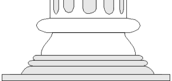

|
|
||
|
Een week of wat terug was er een rommelmarkt bij mij in de buurt. Gewoon, op zondag, in de sporthal. Voor vijf piek mocht je naar binnen en de koffie in plastic bekertjes was ook niet goedkoop voor een rijksdaalder per slappe bak. Wat de handelaren voor hun tafels hadden moeten neerleggen weet ik niet, maar iemand verdiende hier vrolijk aan. Goed, da’s niet erg verder, natuurlijk. Want niemand dwingt mij om dat soort rommelmarkten te bezoeken. En toch doe ik het met regelmaat. Je weet maar nooit wat je tegen het lijf loopt... en ik ben nu eenmaal een verzamelaar van onnutte maar o-zo-leuke zaken. En als ik al niks van mijn eigen gading vinden mocht, Lies verzamelt peper-en-zout stelletjes in de vorm van varkentjes. Tuurlijk, op eBay koop je die dagelijks — dat is geen grap, ga maar eens kijken op www.ebay.com en zoek naar pepper en pig — maar de dollars zijn toch wat begrotelijk. Om van het verzenden van die beestjes over de grote plas nog maar te zwijgen! Dit keer was het trouwens wel goed raak: drie stelletjes en twee verweesden, wiens partner ergens in het leven verdwenen was. Ook die neem ik mee natuurlijk: Lies heeft ook al wat weesjes en je weet maar nooit. Als ze nou ooit nog eens die lang beloofde website zou maken met digitale prentjes van haar collectie zou ik me ze beter in kunnen prenten. Rare dingen, rommelmarkten. De resten van onze rijke maatschappij worden daar voor een paar piek uitgevent door mensen die daar blijkbaar een hobby in hebben. Maar al te vaak bekruipt me het gevoel dat de waarde van zaken bepaald wordt door de plek en de tijd: hoe ouder, hoe duurder. Spulletjes die ik twintig jaar geleden ooit aan de stoeprand heb gezet komen hier weer terug, voor prijzen die me doen twijfelen of ik ooit nog wel wat weg zal mieteren. En aan de andere kant, dingen die een paar jaar terug nog stervensduur waren gaan hier voor een appel en een ei van de hand. Het maakt me wat bespiegelend over de waarde der dingen, zou je wel kunnen zeggen. Misschien dat ik daarom rommelmarkten zo leuk vind...
Met regelmaat kom je ook computers tegen op die markten. Of — om een
dwarsstraat te noemen — op Koninginnedag. Ik begin daar niet aan, want het
museum staat onderhand knap vol. En om nu door een stervensdruk Amsterdam
— verdraaide provincialen! — te moeten zeulen met een homecomputer of twee
staat me echt niet aan. Mocht ik ooit een Commodore PET tegenkomen wordt het een
lastiger keuze, da’s één van de laatste modellen die ik nog echt ontbeer.
Ik denk eigenlijk dat dat nou de reden was dat ik toch viel voor die HitBit. De
aan zekerheid grenzende waarschijnlijkheid dat het beestje binnen een kwartier
aan puin getrapt zou worden. Ik ben een sukkel, ik geef het toe. Maar dieren en
computers zijn me lief.
In onze wereld verliezen zaken snel hun waarde. In vijftien jaar is alle
elektronica goedkoper en beter geworden, maar nergens is de ontwikkeling zo
extreem als met computers. Een pc van een paar jaar oud is schroot. De
homecomputertjes van vijftien jaar terug zijn in de ogen van verreweg de meeste
mensen achterhaald kinderspeelgoed. En ergens hebben ze natuurlijk nog gelijk
ook.
|
||
 |
|